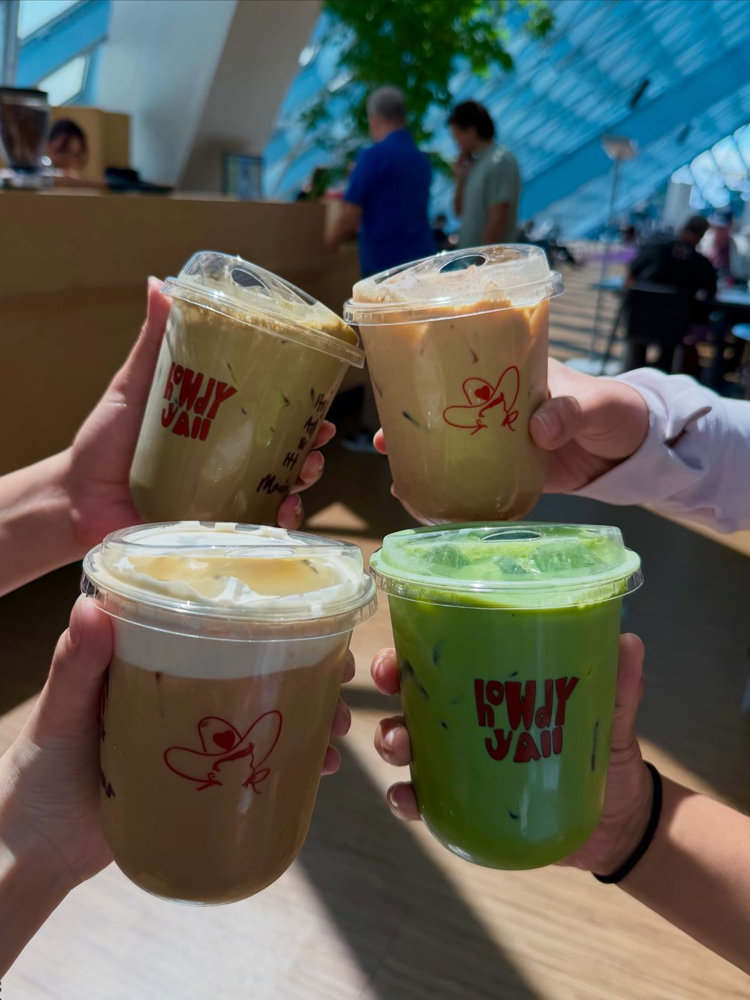
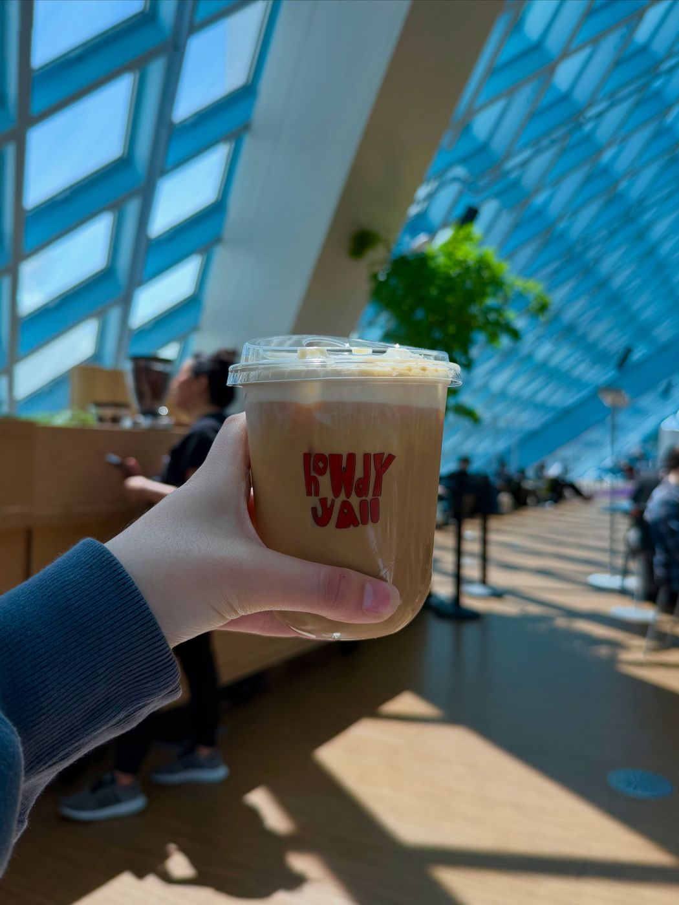
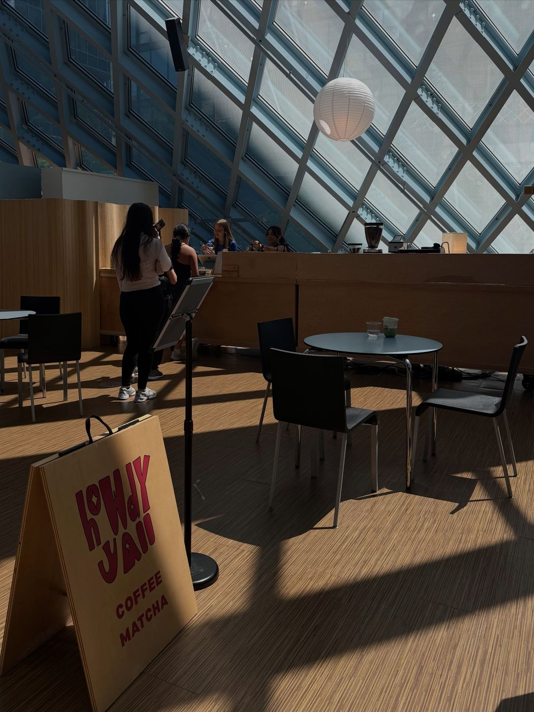
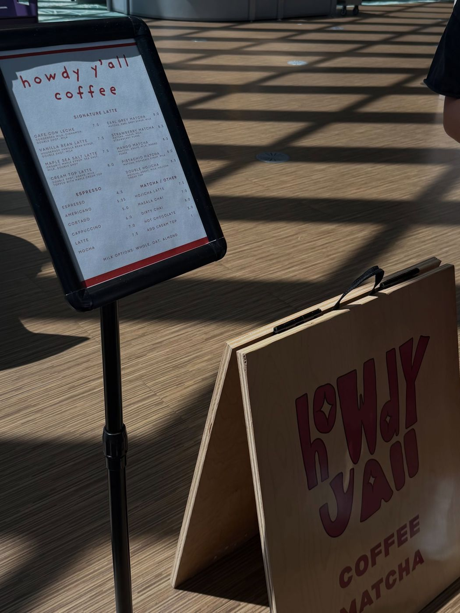

Howdy Y'all at the Seattle Central Library


I have been wanting to visit this cafe since last summer and I finally got the chance to! Howdy Y'all is a coffee and matcha bar led by a Korean and Mexican duo. We visited their permanent location at the Seattle Public Library and it did not disappoint.
Cream top latte, 9/10. I loved the sweetness of this drink, probably from the agave, and it paired so well with the espresso. The foam added just the right amount of extra sweetness, and the espresso itself was nutty with a really good flavor.
Cafe con leche, 9/10. Lucia ordered this. The coffee wasn't too strong, sweet enough without being overpowering, with the perfect amount of syrup. Not too much cinnamon, which was honestly ideal because it usually just sinks to the bottom and messes up the last few sips.
Earl grey matcha, 8.7/10. Rebekah got this one. Not overly sweet, in the best way. The Earl Grey flavor came through but wasn't muted, and it balanced really well with the matcha, not grassy and not grainy.
Double hojicha, 6/10. It was Maria's first time trying hojicha and it threw her off. She expected more of a nutty flavor but it felt flat, missing depth. The foam was creamy and well made though.


Overall such a cute little stop. We stayed for a bit and had fun solving sudoku puzzles together. Would definitely return.